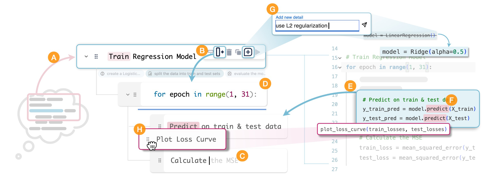
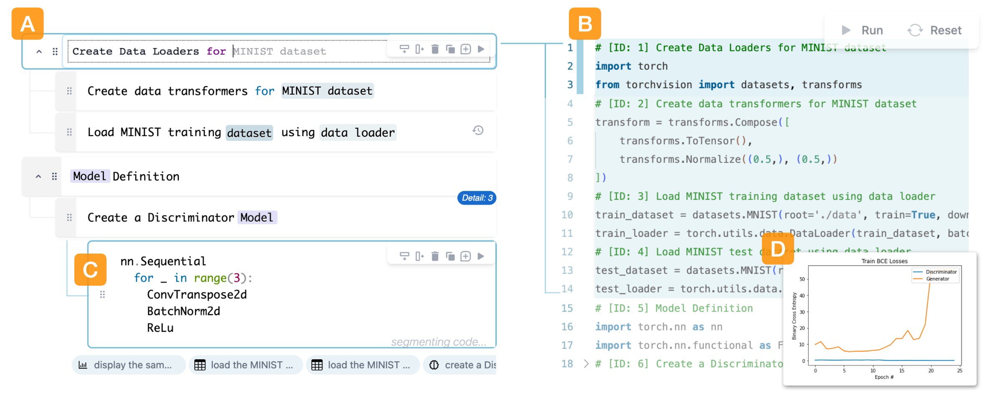
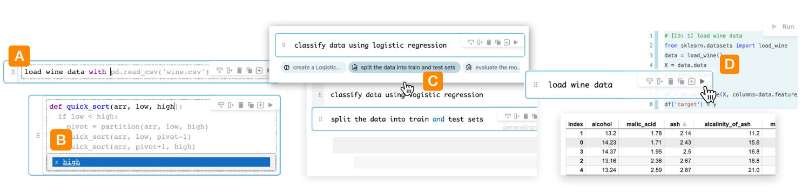
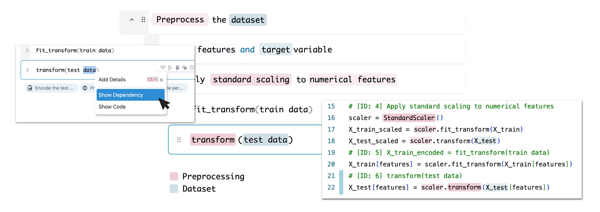
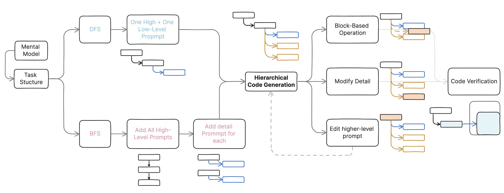

论文：CoLadder: Supporting Programmers with Hierarchical Code Generation in Multi-Level Abstraction
作者：Ryan Yen, Jiawen Zhu, Sangho Suh, Haijun Xia, Jian Zhao
程序员越来越依赖大语言模型（LLM）来生成代码。然而，在此过程中会遇到一些问题，如由于程序员的prompt和生成的代码不一致而导致在代码生成和验证之间的不断切换。当前 LLM 驱动的代码助手在prompt编写过程中提供的支持不足，无法帮助程序员应对新工作流程带来的挑战。本工作采用了迭代设计流程，以了解程序员在使用 LLM 编程时的策略。在此基础上，作者开发了 CoLadder 系统，该系统可在prompt编写过程中通过多层级任务分解、增量代码生成和结果验证的方式来帮助程序员。用户评估表明，CoLadder 能够有效地帮助程序员灵活地将思维模型外化，提高他们在不同抽象层级（从最初意图到最终代码实现）上浏览和编辑代码的能力。
背景介绍
最近的研究表明，大型语言模型（LLMs）在代码助手领域有了显著进展，程序员可以使用自然语言提示生成高质量代码建议，从而不必深入了解低级代码实现的复杂性。虽然这一独特的特性可能使编程过程更加高效，但在这个过程中，程序员需要不断验证LLMs生成的大量代码。
先前的技术尝试将复杂问题分解为预定义的抽象级别的子问题，虽然这些工具成功地帮助程序员了解如何使用LLMs将其意图转化为代码，但它们在两个关键方面的效果受到限制。首先，预定义的分解级别可能无法准确反映程序员心中的任务结构，而这通常也与生成的代码结构相一致。其次，由于每个程序员对解决编程任务都有独特的心智模型，这些技术难以适应并确定每个人最适合的任务分解级别。
因此，本文旨在探索是否有机会使程序员能够根据其个体心智模型分解任务，并有效地将其意图转化为生成的代码。
本文的贡献如下：
- 通过访谈研究确定了编程人员在外化心理模型以及将意图转为代码时的策略与需求
- 实现了交互式系统 CoLadder ，采用分层结构和基于块的设计，提供了在不同抽象层次下进行代码生成的功能，同时保持任务目标和代码结构的一致性
- 用户评估表明，通过不同层级下的生成方式增强了可控性，并能使用户在prompt编写过程中验证结果，从而提高了可用性
相关工作
编程者与LLM的交互
对于验证过程的挑战，用户有不同的应对方式
Abstraction的匹配问题：概念层级的描述到类伪代码的描述
改进基于LLM的代码生成
技术策略：fine-tuning/prompt engineering
针对基于LLM的代码生成的系统与工具：新的编程语言、prompt串联、任务分解
编程者对程序的心理模型
心智模型：对代码、基本编程任务和程序整体结构的理解和解释
让程序员专注于规划代码和任务结构
可视化编程工具
Flow-based: 强调逻辑流程
Block-based: 对代码块精细的控制
设计过程与目标
- 与6位常使用LLM代码生成工具的编程者进行访谈，了解以下内容：
将意图转为代码时的挑战(C)
为应对挑战采取的策略(S)
编写prompt过程中的需求
挑战与策略
C1: 非结构化prompt
S1-S2 任务分解、层次化的结构组织任务
C2: 从意图到代码的过程难以控制
S3-S6 增量生成、in-situ、重排列代码、替换代码
C3: 易打断的上下文切换
S7 编写prompt时验证结果
C4: 从prompt到代码对应关系不明确
S8-S9 prompt中加入代码、利用注释
设计目标
DG1 提供层次化的prompt结构
DG2 直接操作prompt块修改代码
DG3 编写prompt时进行代码验证
DG4 协助多抽象层级下的intent-code的导航
使用场景

使用层次化的任务分解进行提示创作(A-E)
A 高层级prompt
B 添加子任务
C 自动补全
D 代码语法prompt
E 对生成代码进行总结不同抽象层级下进行导航和验证(F)
F 语义高亮
修改和基于块的操作(G-H)
G 补充
H 拖拽
系统
系统界面

(A) prompt树编辑器：将意图分解成为更小的prompt块
(B) 代码编辑器：便于代码验证和编辑
(C) prompt块：可以混合模式编写提示，既包含代码又包含自然语言
(D) 执行结果面板：显示执行结果和任何相关的错误信息
任务结构到代码结构(DG1&2)
A）prompt树编辑器
不自动分解任务，自由构建符合心理模型的prompt
可折叠代码编辑器相对应的可折叠提示树
C）prompt块
支持自然语言和代码
版本记录
此外，还有基于块的操作（添加、编辑、删除、复制、拖拽、补充）
从prompt验证结果(DG3)

步骤列举、自动补全（AB）、推荐（C）、中间结果（D）
不同层级间的导航(DG4)

- 展示相关代码
- 语义高亮与相关度
- 键盘操作
系统实现
- React Typescript, Monaco Editor, Pyodide, OpenAI GPT-4 API
tree-based prompting
使生成的程序与prompt结构相匹配
提供prompt block and tree structure，自下而上构建
错误预防与纠正
代码段之间不匹配的问题
Propagate Changes 的提示模板，递归评估每个提示块中的相应代码
评估
- 12位经验丰富且常使用AI代码生成工具的程序员
- baseline：根据内联注释生成代码的代码编辑器
- 分别使用两种工具完成Python编程任务
- 定性分析和系统日志数据
- Usability / perceived cognitive load / Utility
外化心智模型的过程

BFS: 概述了所有主要任务，随后通过添加子任务深入研究了更多细节。
DFS: 在进入下一个主要任务之前，先处理了主要任务中的所有子任务。事先有明确心智模型的参与者更倾向于采用这种方法。
局限
编程任务的多样性
对注重快速迭代的编程任务没有那么有效
用户更多的关注在prompt编写上
对生成过程的控制而非对程序本身
提示树结构可能并不总是与实际代码结构一致
任务和代码结构可能会有很大偏差
类图等可视化工具，以更好地表达程序结构以及类或组件之间的关系
讨论
心理模型的形成与构建
促进问题解决方法的动态调整
过度依赖与程序理解
相比于baseline，利于对整体编程结构的深入理解
经验与任务熟悉度
研究新手和经验丰富的程序员在解决编程任务时形成心理模型的差异
深入了解先验知识如何影响他们与 CoLadder 等代码助手的交互
✉️ zjuvis@cad.zju.edu.cn